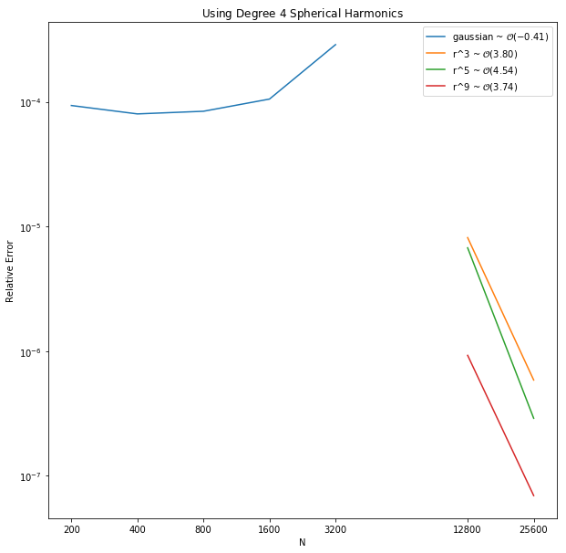
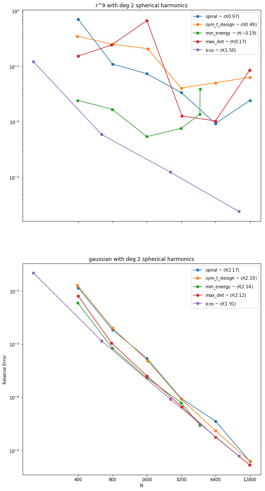
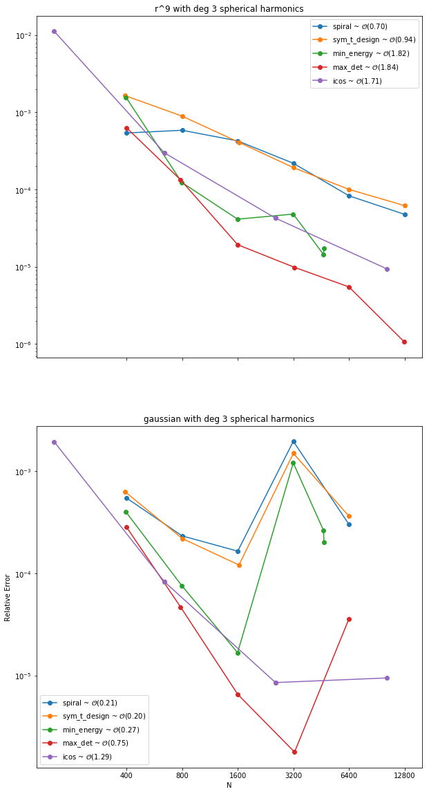
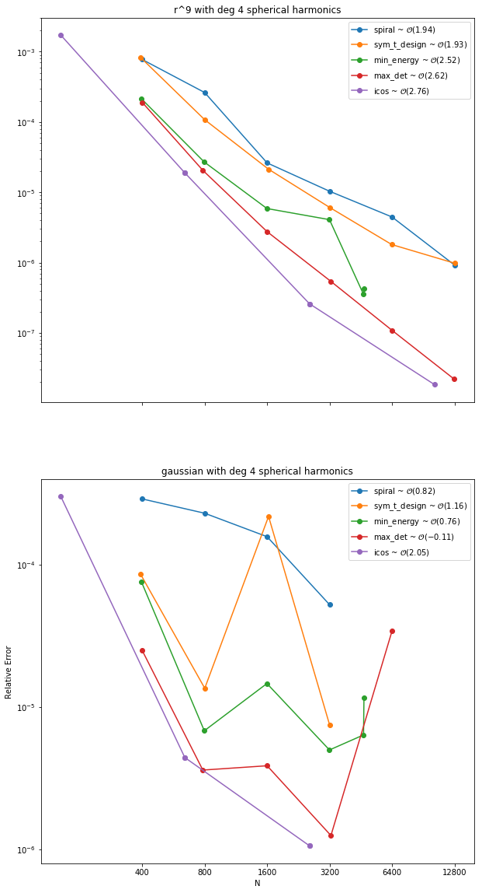

- Sage's Tasks
- Error is independant of RBF
- Theorem on Exactness for Polynomials
- Symmetric Orthogonal Gradients Method
- RBF-OGr Summary
- The Symmetric Case
- Meeting Followup
- Surpassing the Gaussian
- References
We reviewed and explained the phenomenon that is the subject of experiment 003 wherein the error seemed to be independent of the choice of RBF. We reviewed, in detial, Dr. Piret's paper [1] on the Orthogonal Gradient Method; and have decided that Sage will implement the Symmetric Orthogonal Gradient Method.
Sage's Tasks
- Learn and implement the RBF Symmetric OGr method.
Find an example where $\phi(r)=r^9$ attains better accuracy than the gaussian.Add the symmetric T-design points as a node-set.Add more node sets.- Research the Skeel Condition Number[2].
- Research sphereical harmonics.
Error is independant of RBF
In the previous meeting we outlined a phenomenon wherein the error was independent of the choice of RBF, and the exploration of which is the subject of experiment 003. The the conclusion (at the time) of this experiment, we asserted that some property about iterated differentiation was requiring one degree higher. This may not be the case.
The new explaination is that the particular geometry of the sphere is to blame. On the sphere, the normal vector at a point is given by $\vec{n} = \frac{1}{r}[x, y, z]^T$, where each entry of the gradient is a one degree polynomial. Thus if our interpolant $s(\vec{x})$ is a polynomail of degree $n$ then $(\vec{n}\cdot \nabla)s(\vec{x})$ will be a polynomial of at most degree $n+1$. Thus if our approximation to $(\vec{n}\cdot \nabla)$ is exact for polynomails of degree $n+1$ our approximation to $\Delta_\SS$ will be exact as well. This sugests the following theorem.
Theorem on Exactness for Polynomials
Theorem: Let $\SS$ be a surface such that the normal vector at any point on the surface can be written component wise as $n$th degree polynomails. Then the projection method using PHS-RBFs and augmented with a basis for polynomials of degree $n+m$ will be exact for polynomials of degree $m$.
Symmetric Orthogonal Gradients Method
The Radial Basis Function Orthogonal Gradients Method (RBF-OGr) is detailed in [1]. Dr. Piret has since improved the method to the Symmetric OGr Method which Grady outlined in meeting.
RBF-OGr Summary
In the RBF-OGr method, we are given $n$ points, and we generate $2n$ more points such that for each original point we have two new points, one at distance $\delta$ in the direction of the normal vector and another at distance $\delta$ in the negative of the direction of the normal vector. An RBF interpolant $s(\vec{x})$ is constructed using $3n$ basis funtions centered at each of the $3n$ points that interpolates the original $n$ points. This gives an underdetermined system. We therefore add $2n$ more conditions. We require that $(\vec{n} \cdot \nabla) s(\vec{x}) \vert_{\vec{x}=\vec{x}_i} = 0$ where each $\vec{x}_i$ is one of the original $n$ points. This adds an additional $n$ conditions, one for each point. We also require that $(\vec{n} \cdot \nabla)(\vec{n} \cdot \nabla) s(\vec{x}) \vert_{\vec{x}=\vec{x}_i} = 0$ for the final $n$ conditions.
The solution to this $(3n)\times(3n)$ linear system gives the weights for an RBF interpolant for which the lapplacian of the interpolant is equal to the surface laplacian at all $n$ points. Analytically deriving the laplacian of this interpolant gives the weights for the surface laplacian.
Meeting Followup
Surpassing the Gaussian
When the shape parameter was optimized for each stencil, the best that the gaussain could achieve was between $10^-4$ and $10^-5$ error (except when the spherical harmonics exactly reproduced the operator). Due to ill-conditioning, the gaussian wasn't tested beyond $n=6400$ points. However, the PHS with 4th degree spherical harmonics added attained far higher accuracy and higher than 3rd order convergence.
Nodeset Survey
Four new nodesets were added. The minimum energy nodes, the maximum determiant nodes, the symmetric T-design nodes, and the equal area mesh icosohedral nodes. The plots below show their performance when using $r^9$ and the gaussian when augmented with shperical harmonic basis terms up to degrees 2, 3, and 4.
  References
- Cécile Piret. The orthogonal gradients method: a radial basis functions method for solving partial differential equations on arbitrary surfaces. Journal of Computational Physics, 231(14):4662 – 4675, 2012. URL: http://www.sciencedirect.com/science/article/pii/S0021999112001477, doi:https://doi.org/10.1016/j.jcp.2012.03.007.
- Nicholas J. Higham. Accuracy and Stability of Numerical Algorithms. University of Manchester, 2002. URL: https://epubs.siam.org/doi/abs/10.1137/1.9780898718027.fm, arXiv:https://epubs.siam.org/doi/pdf/10.1137/1.9780898718027.fm, doi:10.1137/1.9780898718027.fm.